Вітальня · журнал «ДентАрт» 2019 №4
Ярослав Заблоцький, стоматолог, професор: «Працювати треба так, щоб цінність вашого продукту набагато перевищувала його вартість»
Розмовляла Ганна Антипович,заслужена журналістка України
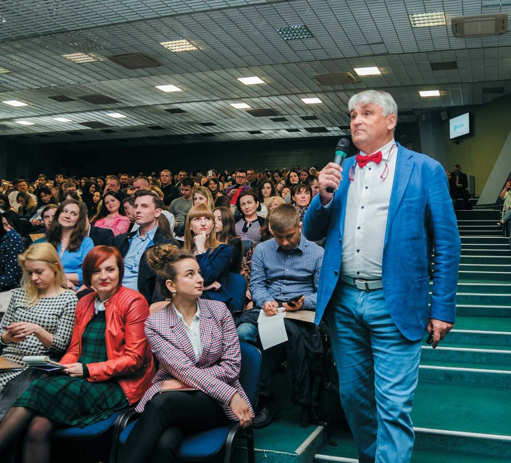
Ярослав Заблоцький – один з найуспішніших стоматологів світу, він створив мережу клінік преміум-класу (Клініка Заблоцького), а нині розбудовує мережу офісів (Dental Care Offices) для профілактики стоматологічних захворювань. Досвідчений імплантолог (захистив докторську дисертацію з імплантології та написав чи не першу в Україні монографію на тему зубної імплантації, яка отримала відзнаку Академії медичних наук України), він мріє навчити людей так доглядати за своїми зубами, щоб їм були потрібні не клініки, де лікують зуби чи встановлюють зубні імплантати, а «офіси», де не дають зубам захворіти. І не просто мріє, а робить для цього все, що тільки може...
«Я випадково втілив мрію стоматологів Європи й Америки, зробивши клініку за каталогами»
– Ярославе Володимировичу, з Ваших 60 прожитих літ понад 40 пов’язані зі стоматологією. Розкажіть про три найвизначніші (чи поворотні) пункти на професійному шляху, що дозволили Вам здолати ті вершини, яких сягнув стоматолог у червоному метелику.
– Як не дивно, перше, що я хочу згадати, відповідаючи на це запитання, – це журнал «ДентАрт». Знаєте, чому? У 35 років я став молодим, як мені на той час здавалося, доцентом кафедри ортопедичної стоматології Львівського медичного інституту, тепер університету, і мав намір привнести в Україну сучасну стоматологію, принаймні на свою кафедру. Проте дуже швидко, за рік-півтора, я зрозумів, що зробити це неможливо, адже далеко не все залежить від мене. Відтак я вирішив відкрити приватну клініку, намовляючи дружину продати нашу двокімнатну квартиру в центрі Львова, щоб купити приміщення для клініки. «Ні, квартира буде дітям!» – сказала вона. Отже, щоб купити приміщення для клініки, а культури оренди тоді ще не було, я змушений був просто позичати гроші.
Забігаючи наперед, можу сказати, що квартиру ми все-таки продали приблизно через рік після того, як відкрили клініку, і за виручені гроші купили панорамний рентгенівський апарат, який через 10 років замінили на новий. А гроші для бізнесу та життя з моменту відкриття клініки мені доводилося позичати доволі часто. Спочатку я позичав гроші для купівлі приміщення та його ремонту чи, точніше, реконструкції, адже з будівлі, яка мала років 200, було вивезено 450 вантажівок сміття, а завезено 30 тисяч цеглин.
Потім, коли ми відкрились, гроші були потрібні, щоб платити співробітникам зарплату, коли зовсім не було пацієнтів, чи навіть для того, щоб купити туалетний папір для пацієнтів, чи заправити машину, щоб доїхати додому, бо продавши квартиру в центрі, ми жили за містом, чи просто купити для своєї сім’ї хліб, переважно без масла. Та й часто доводилося позичати навіть по 5 доларів, адже у той час людей з грошима було дуже мало. Загалом, за весь час у мене було 150 кредиторів, які позичали мені гроші, хто скільки міг.
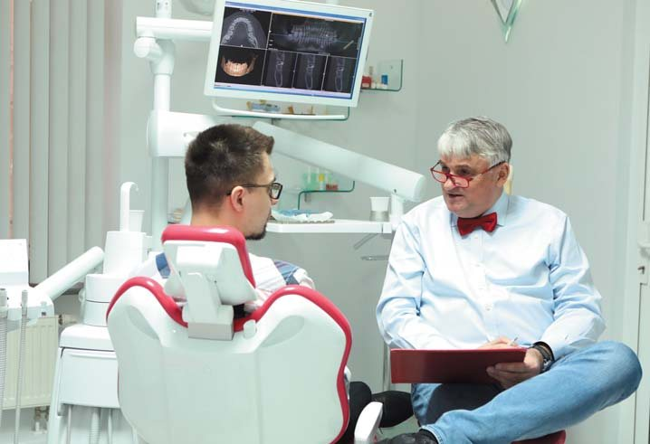
Проте купуючи приміщення та роблячи ремонт, я весь час думав, де ж узяти кошти на обладнання. Розумів, що для цього грошей мені потрібно багато і що ніхто мені таких грошей не позичить. Я обходив усі фонди та банки, а вони мені відмовляли з тої ж причини, через яку і тепер не дають коштів для започаткування бізнесу. Вони казали: надайте нам документи, які підтверджують, що ви вмієте вести бізнес, покажіть ваш баланс за останні 6 місяців, і тоді ми вирішимо, дати вам кредит чи ні. А який баланс може їм надати людина, яка лише започатковує свою справу?
І ось саме тоді у журналі «ДентАрт» я натрапив на статтю про те, що компанія «Siemens» (тепер це «Dentsply Sirona») надає товарні кредити на стоматологічне обладнання. Уже наступного дня я був у Києві, прийшов у «Siemens»: «Добридень, мені потрібен товарний кредит на стоматологічне обладнання». – «А Ви усвідомлюєте, що це не просто дорого, а дуже дорого?!» – запитала мене Світлана Сапсай, керівник напрямку стоматології у компанії «Siemens». Далі був рік перемовин. Дякую, Світлано, що повірили! Ось так, випадково, я потрапив у преміум. Все просто, оскільки обладнання цієї фірми – преміум-класу, то я, сам того не усвідомлюючи, відразу потрапив у преміум, тобто на вершину піраміди.
Тепер, оглядаючись назад, я гадаю, що якби у мене були гроші на дешеве обладнання, то швидше за все я його і купив би. Але оскільки грошей для купівлі обладнання в кредит, та й товарний кредит обладнанням, ніхто не давав, то у мене було два варіанти: або нічого не робити, або брати товарний кредит від компанії «Siemens». Це дуже визначна подія для мене, і я вдячний журналові «ДентАрт», який вчасно дав мені інформацію, що мала для мене вирішальне значення. Хто знає, як би все склалося, якби я не читав журнал «ДентАрт»?!
Друга обставина, яку б я назвав, – це те, що тоді не було Інтернету. Коли я обговорював питання товарного кредиту із «Siemens», а потім завдяки Олегові Мацеху і з компанією «KаVо» («KаVо» та «Siemens» – це як «Меrcedes» і BMW в автомобілебудуванні), єдиним орієнтиром для мене були каталоги обладнання. Я дивився на ті фотографії і думав, що саме так працюють усі стоматологи світу, не підозрюючи, що ці світлини – невтілений ідеал. За кордон я тоді ще нікуди, окрім Польщі і Чехії, не виїжджав, тож не знав, який вигляд насправді мають стоматологічні клініки/кабінети у Західній Європі чи Америці. Якби мені тоді був доступний Інтернет, то я побачив би реальність і не зробив би того, що зрештою зробив. А так я зробив клініку за каталогами, та ще й з найдорожчим обладнанням, по суті, втіливши ніким ще не реалізовану мрію.
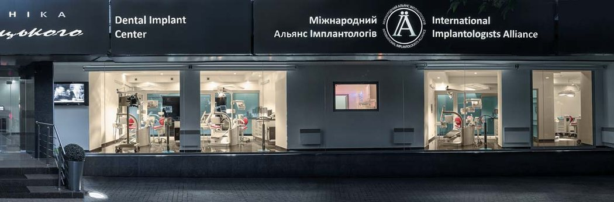
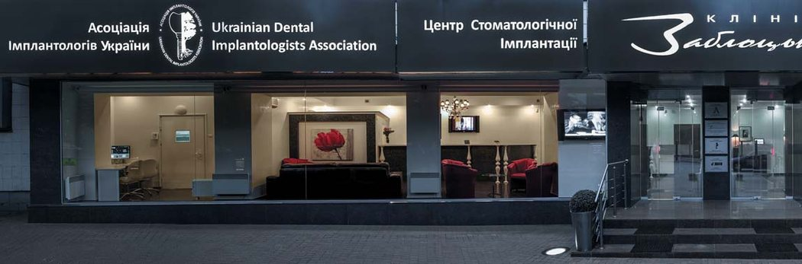
Через п’ять років, приїхавши у США і відвідавши близько 40 клінік у Нью-Йорку, Лас-Вегасі, Сан-Франциско, Бостоні, я не знайшов жодної подібної до тієї, яку п’ять років тому відкрив у Львові. Телефоную додому дружині: «Зеню, маю для тебе дві новини – гарну і погану. Гарна новина – я повертаюся додому. А погана… пам’ятаєш, ти мені цитувала Геннадія Хазанова, який казав, що чоловік повинен мати два недоліки – красу і скромність? Так от, я повертаюся вже з одним, і це зовсім не скромність».
І це насправді визначні етапи мого життя, бо вони зробили мене не таким, як усі. У цьому, окрім «KаVо» та «Siemens», мені дуже посприяли, як не дивно, конкуренти – львівські стоматологи. Спочатку вони повірили в легенду, що моя дружина – племінниця Клінтона і що саме він привіз нам гроші на клініку. Повірити в те, що я просто позичив гроші, було нелегко. Потім, коли вони побачили, якою насправді вийшла клініка, то прозвали мене Титаніком, бо гадали, що все це потоне разом зі мною як передчасне для України. Далі, коли ми відкрились і поставили вищі ціни, ніж у всіх, ми стали дратувати усіх стоматологів Львова, дарма, що на відміну від інших, мали для цього підстави. На запитання пацієнтів, чому у них так дорого, стоматологи нерідко відповідали: «Це у нас дорого?! Ви до Заблоцького підіть!». Потім ми побачили, що деякі стоматологи почали приходити до нас під виглядом пацієнтів і переписували або фотографували наші ціни у гривнях, які потім, як переказували нам деякі наші пацієнти, називали пацієнтам у доларах. Таким чином, у головах людей ми стали не просто дорогою, а космічно дорогою клінікою.
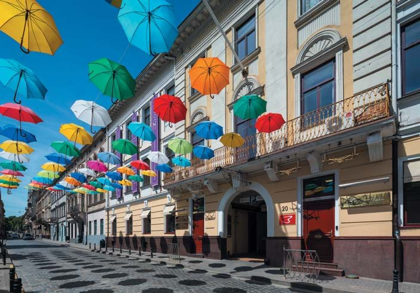
Спочатку ми виправдовувались, а потім зрозуміли, що раз так про нас думають люди, то ми нічого з цим зробити вже не можемо. І ми почали використовувати своє цінове позиціонування – раз люди так кажуть, то ми повинні такими бути. Відкрившись у Києві 2010-го, ми одразу вирішили стати найдорожчою клінікою.
Це означає, що за всіма канонами бізнесу, ми одразу відкривалися як п’ятизіркова клініка, просто тоді я про це ще нічого не знав, адже не читав книжок ні про маркетинг, ні про бізнес. Першу книжку про бізнес я прочитав якраз перед ухваленням рішення про відкриття клініки у Києві, у 2008-му. Мій приятель, пацієнт і бізнесмен, приніс мені книжку «Бізнес у стилі фанк» та й каже: «Прочитай, це книжка про тебе». Читаю я ту книжку і не можу зрозуміти, чому це два шведські професори-економісти мають писати про Заблоцького. І зрештою знайшов те, що мав на увазі мій приятель. Це була цитата президента компанії «Canon», який сказав, що коли ти приходиш до друзів з якоюсь ідеєю і вони схвально до неї ставляться, це означає, що подібні речі вже хтось зробив. А якщо твою ідею друзі чи колеги вважають божевільною, нездійсненною, називають тебе «Титаніком», то ти маєш шанс зробити те, чого ніхто ніколи не робив.
Так-от, я зробив щось таке, чого до мене ніхто не робив. Тепер це називають Стратегією Блакитного Океану – почитайте цю дуже популярну книжку професора Кім Ві Чана.*
«У клініці ми лікуємо хворих, а в офісі ми не даємо людям захворіти»
Третім важливим поворотним моментом було те, що привело мене від імплантології до профілактики. Із 40 років свого професійного життя, будучи зубним техніком, а потім стоматологом-ортопедом, двадцять років поспіль я відмовляв своїм пацієнтам, кажучи: «Вибачте, я нічим вам допомогти не можу». У радянську епоху навіть якщо людина мала гроші, то не було технологій. І стоматологи робили пацієнтам знімні протези у склянку з водою, бо нічого іншого запропонувати не могли (як, до речі, переважно роблять і тепер). 20 років тому в Україні з’явилася можливість лікувати пацієнтів з використанням методики стоматологічної імплантації, і я став імплантологом, а найважливіше – я став щасливою людиною, бо зміг повністю беззубим людям буквально за одну операцію повертати зуби, які мають вигляд справжніх, працюють, як справжні, потребують догляду, як за справжніми зубами, і головне, їх не треба на ніч знімати.
Але чим більше я працював як імплантолог, тим більше усвідомлював причини поганих зубів у населення України: мої співвітчизники не вміють чистити зуби і на відміну від американців чи канадійців, не знають, що таке професійна гігієна і що здорові люди мають звертатися за такою послугою кожні пів року.
На жаль, в Україні понад 95% дітей і дорослих мають карієс. У Швеції, де також є синьо-жовтий прапор, карієсу практично немає. На відміну від України, там знають, як доглядати за зубами. Знають, що найкраще, що може зробити мама, – так це привчити дитину пити чисту воду, а не чай, сік та узвар, як у нас. Цукерки, наприклад, у Швеції дають дітям тільки по суботах. Якщо у США пародонтит у понад 50% населення, то в Україні, за деякими даними, майже у 80%. Якщо у США та Канаді така послуга, як професійна гігієна, відома більш ніж 115 років, то в Україні, на жаль, про це мало хто знає, а ще менше звертається за цією послугою кожних пів року.
За деякими даними, у нас ледь не 10 мільйонів зовсім беззубих людей. Так от, якби ті 10 мільйонів мали звичку двічі на день чистити зуби і двічі на рік приходити до лікаря для професійної гігієни, то вони б мали здорові зуби. Тому я щасливий, що в мою голову прийшла ідея відкрити мережу Dental Care Offices – локацій, куди б дорослі й діти приходили не на лікування, а для огляду, діагностики та професійного чищення зубів. Отже, у клініці ми лікуємо хворих, а в офісі ми не даємо людям захворіти.
Моя місія – донести до людей цю інформацію, і я роблю все, щоб офісів було багато, а клініки з часом стали зовсім непотрібні. Тобто, відкривши два десятиліття тому чи не найкрутішу клініку, я хочу, щоб усі клініки, і моя в тому числі, закрилися. Я прагну, щоб усі люди були здоровими. Це мрія, здійснення якої я, напевне, за свого життя не досягну, але принаймні буду робити все для того, щоб зрештою сталося саме так.
Ось, на мою думку, три основні моменти, які в моєму житті були переломними.
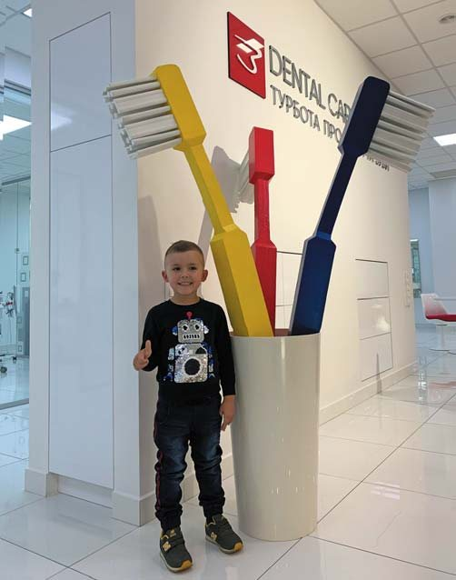
– Чудово! Але поясніть, чому Ви – стоматолог з червоним метеликом?
– Це сталося випадково. Метелики я, звичайно, одягав на урочистості чи в театр. А років 9 тому, коли після відкриття клініки тільки переїхав до Києва, журнал «Компаньйон» запросив мене взяти участь у проекті «Перезавантаження», суть якого в тому, що головний редактор хотів почути відповіді різних людей на одні й ті самі запитання. Я прийшов на цю зустріч без краватки, бо ще не перевіз усіх своїх речей, і один мій приятель каже: «Якось негарно… Я тут поруч живу, принесу тобі щось». І приніс мені червоного метелика. І ось я стою на сцені поряд із диригентом симфонічного оркестру перед великою аудиторією… у позиченому метелику.
– А що? Символічно! Гроші ж для будівництва та обладнання клінік позичали? Позичали. От і розповідайте про це у позиченому метелику…
– А потім я з цим метеликом потрапив на обкладинку журналу, і люди мене стали називати стоматологом у червоному метелику. Потім, у 2014-му, я написав книжку «Як я став Заблоцьким. Пригоди стоматолога в червоному метелику». Ось так. Недавно їхав у ліфті зі знайомим подружжям, то вони сміялися, що чоловікові довелося червоні метелики відкласти вбік, щоб його не переплутали із Заблоцьким.
«Батько дав мені віру в себе»
– Що ж, хай у житті всіх нас буде більше таких закономірних випадковостей, як у Вас із червоним метеликом!.. Хочу запитати таке: ваші батьки не були стоматологами, але, очевидно, їхні риси характеру, їхні настанови вплинули на Ваше формування як людини, громадянина, професіонала? Мої батьки, наприклад, не були журналістами, працювали в колгоспі, але вони мене сформували як журналістку і громадянку – своєю любов’ю до землі, до правди і справедливості, до Українського Слова...
– Так, і на мене батьки дуже вплинули. Мій батько Володимир Іванович Заблоцький усе своє життя пропрацював водієм автобуса. Він був дуже талановитим, знав напам’ять багато творів Шевченка. Колись у СРСР була така програма – «Алло, ми шукаємо таланти!», і мого батька із села Тартаків Львівської області запросили в драматичний театр Києва, але його не пустила мама. Бо тоді була така традиція, що старший брат мав виховувати свого брата, молодшого від нього на 17 років. Батько був шанованою людиною, його друзями були освічені люди Сокаля, невеличкого містечка на Львівщині, де ми мешкали.
Чим я завдячую батькові передусім? Він не побудував меж моїм можливостям. Відтак у мене ніколи не виникало думки, що я чогось не можу. Батько дав мені віру в себе.
Друге, що мене захоплювало в ньому, – людяність. Моя мама часто казала татові: «Тобі треба на плечах написати: той, хто робить людям добро». Він прокидався серед ночі і йшов, бо хтось подзвонив, що потрібна допомога. Коли я був маленьким, то часто їздив з ним на автобусі у рейс. Батько завжди зупинявся біля стареньких людей, котрі стояли обабіч дороги, зазвичай із мішками картоплі. Виходив з кабіни, заносив ті мішки в автобус. Коли приїжджав у кінець маршруту, то питав бабусь, де вони живуть, і підвозив ті мішки прямісінько додому, не беручи за це грошей.
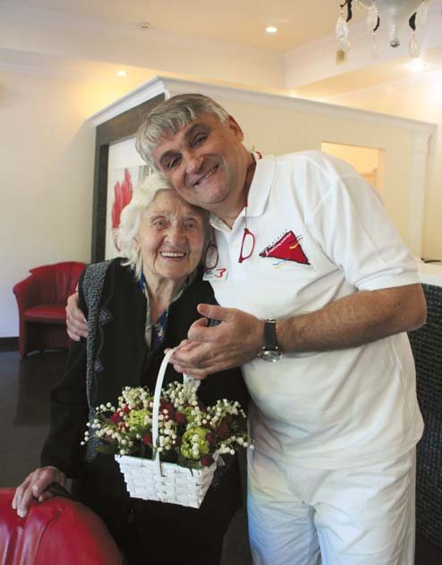
Коли я виріс, то часто міркував: а що ж я можу у своїй професії зробити, щоб допомагати людям, як допомагав мій батько? І як не дивно, відповідь на це питання допомогла знайти мені моя мама Анастасія Іванівна. Коли їй було 70 років, а я працював доцентом кафедри ортопедичної стоматології і в черговий раз робив своїй мамі знімні протези, вона звернулася до мене зі словами: «Синку, ось ти мені ці зуби переробляєш уже разів десять, а вони як не трималися, так і не тримаються. Я навіть боюся з ними до церкви ходити, бо як широко відкриваю рота, то вони випадають. А як живуть ті матері, чиї діти – не стоматологи? Хто ж їм допомагає?»
І ось татів приклад людини, яка завжди допомагала іншим, та мамині слова і спонукали мене започаткувати акцію «Якість життя для наших батьків» з безкоштовної імплантації літнім людям, у яких немає таких дітей, як я, хто міг би зробити нові зуби чи заплатити за них.
Цей проект розпочався 2010 року, коли я став президентом Асоціації імплантологів України. Була річниця закінчення Другої світової війни, я слухав промови всіх тих державних мужів і думав: скільки можна ляпати язиком, що ми ветеранам допомагаємо, коли насправді ні біса не робиться? Зробімо їм зуби за наш кошт! Я подзвонив лікарям, домовився з військовим госпіталем, і ми лише за один день прооперували 90 пацієнтів, встановили кожному по чотири зубних імплантати на нижню щелепу й одразу зробили пластмасові зуби.
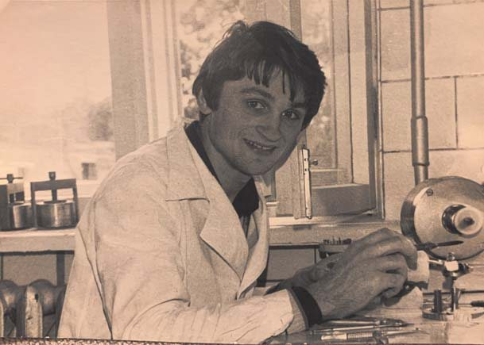
За час цієї акції ми повернули втрачену якість життя тисячі беззубих стареньких в Україні і за кордоном – на останньому етапі до нас приєдналися стоматологи США і Польщі, навіть російські колеги, хоча їм і не подобалося те, що то не вони перші подбали про ветеранів Радянської Армії, а ми, українці. А ми допомагали членам усіх ветеранських організацій. Коли оперували пацієнтів у Львові й Івано-Франківську, то в одній палаті лежали ветерани УПА, а в другій – ветерани Радянської Армії.
Тоді акцію підтримали 200 стоматологів-волонтерів з усієї України, і це моя велика гордість. І хоч акція як така закінчилася, допомогу літнім людям і далі багато стоматологів надають у своїх клініках, на свій розсуд обираючи серед пацієнтів соціально незахищених людей, які страждають від беззубості.
До речі, коли ми з Мироном Угрином були у професора Бренемарка, який винайшов зубну імплантацію, то він сказав, що чекав на ідею безкоштовної імплантації для літніх людей від західноєвропейців чи американців, а придумали і реалізували її українці.
«Преміум не прощає ігнорування «дрібниць»
– Зацікавлення тим, як Заблоцький зі 100 євро в кишені організував бізнес вартістю понад 100 мільйонів євро, у стоматологічної спільноти досить велике. Що передусім Ви порадите молодим колегам, котрі мають намір відкрити свою клініку?
– Коли у 1998 році я обладнував свою клініку, стоматологічна установка коштувала 80 тисяч німецьких марок. Рік тому ми замінили обладнання на нове, і одна установка тепер коштувала нам 80 тисяч євро. Але в той же час сьогодні можна купити установку китайського виробництва приблизно за 1,5 тисячі євро, бачив таку на виставці. Це означає, що сьогодні власну справу у стоматології започаткувати легше, і як каже мій знайомий на підтвердження моїх слів, у Києві в кожному новому будинку відкривається нова стоматологічна клініка.
Якось недавно я розмовляв з одним із таких стоматологів, який відкрив клініку у Києві, і він каже: «Обладнання тепер не має значення. Пацієнти тупі, вони не розуміють, які я куплю установки. Я хочу бути таким крутим, як ти, але не хочу позичати так багато грошей. Можна ж купити чеську установку за 4 тисячі євро, можна італійську… Навіщо купувати за 80 тисяч?»
Тобто моєму знайомому здається, що у преміум можна потрапити, не вкладаючи в це коштів. Але часи змінилися, і сьогодні туди потрапити випадково, так, як я колись, неможливо. І коли ти хочеш створити клініку преміум-класу, то у тебе навіть труси мають бути преміум. Бо якщо ти хочеш прибрехати, зекономити на установках, операційній чи стерилізаційній, сподіваючись на необізнаність пацієнтів, рано чи пізно це все одно вилізе. Преміум не прощає ігнорування «дрібниць».
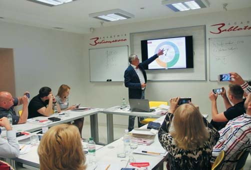
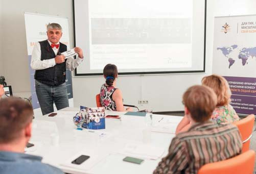
Якщо хтось хоче відкрити кабінет, то цілком прийнятно купити китайську установку за 1,5 тисячі євро, заробити грошей, купити другу установку, вже кращу… Але якщо, як той мій співрозмовник, ви маєте амбіційні плани і хочете зробити клініку, як, наприклад, у Заблоцького, то мусите розуміти, що в бізнес треба вкладати не стільки грошей, скільки маєте чи скільки хочете, а стільки, скільки треба.
Коли я будував клініку у Львові, я не знав, скільки буде потрібно грошей. Я навіть не мав кого спитати тоді, 22 роки тому, в яку суму це виллється. Та коли ми 10 років тому відкривали в Києві клініку площею 300 кв. м., я вже знав, що за такими стандартами на три кабінети та одну операційну мені потрібен мільйон євро – без ремонту і купівлі приміщення.
Сьогодні я розумію, що купувати приміщення для клініки – це неправильно. Тому що володіння приміщенням і володіння стоматологічною клінікою – два різних бізнеси, і не треба їх плутати. 22 роки тому культури оренди, як я вже казав, не було, і я не мав варіантів, мусив купити приміщення. Але у вас є. Сьогодні достатньо оренди. Та українці люблять мати щось своє. І навіть коли у них мало грошей, вони частину з них витрачають на приміщення, а решту на обладнання, і тоді часто виходить і не те щоби так, і не те щоби ні…
Отже, якщо ви обираєте спосіб органічного зростання, можна починати з простішого і прямувати до кращого...
– Але тоді ви будете пливти у червоному океані шаленої конкуренції…
– Так. Тому той, хто обирає Стратегію Блакитного Океану, хто ставить планку, що він хоче бути навіть не такий, як Заблоцький, а кращий, має позичити гроші чи залучити до справи партнерів – шляхи можуть бути різними, але в будь-якому випадку вам потрібен мільйон, не менше. Такі готелі, як Хілтон, Хаят, Марріот, не відкривалися з трьох зірок, вони відразу були п’ятизірковими.
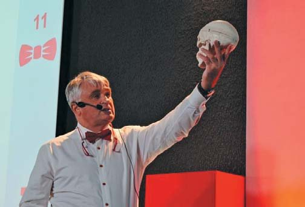
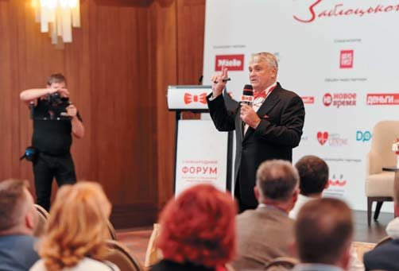
Сегментів цінового позиціонування є, грубо кажучи, три. Один з них – це ви купуєте щось найдешевше і кажете: «Я продаю свої послуги так дешево, що дешевше не буває». Нічого поганого в цьому немає. Але якщо ви хочете перейти на інший рівень і продавати дорожче, то варто закрити стару клініку й відкрити нову, адже є ризик того, що ви не отримаєте тих клієнтів, яких хочете, і втратите тих, кого маєте. Другий рівень – ціна – якість. Найскладніша категорія для конкуренції, бо там усі – і ті, що близько до дешевих, і ті, що наближаються до дорогих. Ми ж працюємо у третьому сегменті, де діє принцип: гроші не мають значення. Тому я пораджу молодим стоматологам передусім обрати ту цінову категорію, чи цінове позиціонування, в якому вони хочуть працювати, а тоді вкладати у свою клініку стільки коштів, скільки ця цінова категорія потребує.
«Ми пропонуємо пацієнтам те, що їм справді потрібне»
– У книзі «Як я став Заблоцьким. Пригоди стоматолога в червоному метелику» є така порада колегам: треба працювати так, щоб цінність вашого продукту набагато перевищувала його вартість. У чому передусім цінність продукту від клінік Заблоцького?
– У 2012 році журнал «Форбс» писав про нас статтю, і вони визначили п’ять причин, чому Заблоцький став успішним. Однією з них вони назвали екскурсії клінікою, які я робив чи не для всіх пацієнтів. «Форбс» першим пояснив мені, що спочатку я демонстрував цінність, а потім називав ціну, хоча тоді я про це не думав. А мені було що показати. Ми були першими у світі, хто мав у клініці системи мультимедіа, такі телевізійні екрани на установках з інтра/екстра оральними камерами. Ми чи не першими у світі мали лазерні детектори карієсу. Ми були першими, хто започаткував стандарти інфекційного контролю. Наш кабінет стерилізації тоді коштував 100 тисяч німецьких марок. Колеги сміялися, казали: «Понти!» А я відповідав: «Друзі, це не понти, а знання». Бо я вже знав, що 56% людей, заражених гепатитом С, заразилися ним у стоматолога. І тому ми були першими в Україні, хто мав прилад КaVо ЛайфТайм, який дезінфікував стоматологічні наконечники не лише зовні, а й всередині, від крові та слини попереднього пацієнта.
До такого рівня обладнання я звик. Тримаю цю марку і далі. Але сьогодні я говоритиму не про обладнання і стерилізацію, хоч вони були, є і залишаться нашою гордістю, а про інші цінності, якими я дуже пишаюся. Передусім я, власник компанії, консультую усіх дорослих пацієнтів. 10 років працюю на два міста, тож три дні я у Львові, три дні в Києві. Проте будучи доктором медичних наук, професором, практикуючим стоматологом із 40-річним досвідом, я не ухвалюю рішень одноосібно. Консультуючи пацієнта, аналізуючи його комп’ютерну томографію, я говорю про припущення. Високоймовірне, але припущення. А тоді кажу: «Зараз ми знаємо про вашу ситуацію на 90 відсотків. Нам ще потрібно зробити пародонтологічний скринінг, щоб упевнитися, в якому стані ваші ясна – є пародонтит чи немає, і якщо є, то якої складності, зробити функціональну діагностику і з’ясувати, як працюють ваші зуби, прикус, м’язи і суглоби, проаналізувати кожен зуб, особливо це стосується ендодонтично лікованих зубів».
І лише після цього ми виносимо ці відомості на консиліум, на який я запрошую щонайменше десять лікарів – по середах у Києві, по п’ятницях у Львові. Я на консиліумі працюю пацієнтом, і мої десять лікарів мають переконати мене, тобто пацієнта, в тому, що те, що мені пропонують, мені справді потрібне.
Коли ж досягнуто одностайної думки колег про те, яким має бути лікування, я з рукою на серці виходжу до пацієнта і кажу, що йому потрібно зробити. Це означає, що ми пропонуємо людям лише те, що їм потрібне, а не просто те, що ми вміємо. І це ще не все. Якщо ми, наприклад, ухвалили рішення про ортодонтичне лікування, то по його завершенні ще раз робимо функціональне обстеження і виносимо цей кейс на консиліум – якщо лікар-ортодонт доведе нам, що досягнув запланованої мети, консиліум дає добро на зняття брекетів.
Ми ні з ким не конкуруємо на рівні пломб, ми їх практично не робимо. Ми маємо справу з найскладнішими клінічними випадками, і, як я часто кажу, найскладніше лікування у нас триває 2 секунди. Оскільки ми спеціалізуємося на лікуванні дуже складних випадків, то переважно лікуємо під наркозом. І хоча операції тривають по 3 години у дітей і по 6-7, а то й більше годин у дорослих, у сприйманні пацієнтів це триває дві секунди – секунда на те, щоб заснути, і секунда на те, щоб прокинутися. Мати успіх у такому складному лікуванні можуть не просто стоматологи, а майстри, віртуози чи навіть кутюр’є. Разом ми як оркестр, де кожен віртуоз виконує свою партію.
«У Клініці Заблоцького ставити мости заборонено»
– У Вашій книзі безліч епізодів, де звучать тонкий гумор, іронія, сарказм. В одному з таких епізодів – «А зуби де?» – відбилися парадокси зубної моди в СРСР, коли двоюрідна сестра докоряє Вам, що ви іншій двоюрідній сестрі не зробили «хоча б одну золоту коронку, щоб вона на людину була схожа», а реставрували зуби так, що штучні не можна було відрізнити від справжніх. Чи сьогодні Вам доводиться стикатися з парадоксами зубної моди? І що ви кажете пацієнтові, який на догоду моді готовий нищити свої зуби?
– Я закінчив медучилище 1978 року і як зубний технік виготовляв ті золоті коронки власними руками. Та вже тоді я хотів, щоб зуби були білими, а не золотими. Бо ж доходило до того, що дівчина, котра виходила заміж, мусила мати хоча б один золотий зуб. Потім уже треба було мати два зуби. А далі дійшло до того, що деякі дівчата мали всі зуби золоті. Я намагався переконувати пацієнтів, що це згубна і неестетична мода. Тоді ще не було кераміки як такої, але я був одним із перших, хто пропонував пацієнтам облицьовувати реставрації на золотій основі спереду білою пластмасою – те, що не сподобалося моїй сестрі. Пізніше доводилося відмовляти людей від тотального захоплення металокерамікою, бо це призводило до того, що препарування зубів було далеко не щадним, та ще й з усіх зубів видаляли «нерви». У Радянському Союзі це звучало як «почистити канали», і коштувало це так само, як почистити каналізацію.
Я ж говорив своїм пацієнтам: «Якщо вам у 20 чи 30 років зроблять металокераміку, то до 60 усі зуби, з великою ймовірністю, видалять».
Також я був, мабуть, першим, хто став відмовляти пацієнтів від виготовлення мостів з опорою на здорові зуби. Мости – це стандарт у всьому світі, коли немає одного зуба. Як лікар я розумів, що обточування двох сусідніх здорових зубів для моста – це дуже зле, тож пропонував пацієнтові встановити імплантат. Але у перший рік роботи клініки я не наполягав: маєш право вибирати. Та коли клініці минув другий рік, мені наснився сон, що я грішник. Великий грішник. І я прийшов у клініку й кажу: «Ми не будемо більше робити мостів, обточувати зуби, знаючи, що через п’ять років ці мости треба буде міняти, і знову нищити зуби, і через десять років те саме, і це може призвести до втрати пульпи та втрати зуба. Але ж люди цього не знають, і тому ми грішники».
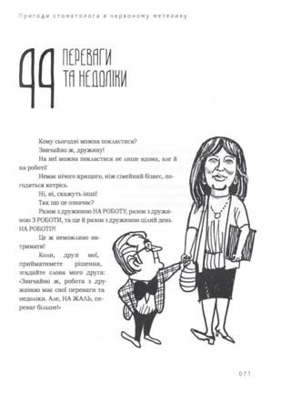
І от уявіть собі, 20 років у Клініці Заблоцького ставити мости заборонено. Хоча спочатку багато пацієнтів боялися імплантації і, почувши, що ми мостів не робимо, ішли в інші клініки. Тож якось моя колега Таня Копичин каже: «Шефе, а може, не будемо відмовлятися від мостів?» – «Ні, Таню, раз я вже собі таке слово дав, відступитися не можу». Хоча ця відмова від мостів для нас означала відмову від грошей. Міст – це три одиниці кераміки. Найдешевша керамічна коронка у Клініці Заблоцького коштує тисячу євро. Це означає, що ви приходите і кажете: «Пане Заблоцький, візьміть у мене 3 тисячі євро і зробіть мені міст». А я відповідаю: «Ні, Ганно, не візьму, не хочу».
Так могли б діяти усі стоматологи. Не треба купувати дорогого обладнання, щоб сказати: «Я теж не ставлю мостів. Не нищу здорові зуби». Але ж як відмовитися від трьох тисяч євро? У нас, до речі, одиниця кераміки може коштувати і по півтори тисячі євро. А коли ми запрошуємо зубного техніка з Америки, який робить зуби зіркам Голлівуду, то продаємо такі керамічні коронки чи вініри по 5 тисяч євро.
Сьогодні парадокси зубної моди нерідко пов’язані з вінірами. З’явився навіть термін тюнінг (від tune – налаштування, налагодження, гармонія). І що ж це за гармонія? Обточують десять передніх здорових зубів і наклеюють на них вініри – з цілковитим переконанням, що це людині потрібно, бо вона стане гарнішою. Ми цього не робимо. Вініри ставимо лише тим, кому це справді потрібно, хто, до прикладу, потребує відновлення анатомічної форми зуба. Красу тоді пацієнти отримують EXTRA.
Також дуже модним стало відбілювання зубів. Однак його можна робити за умови, що зуби ідеальні, не мають пломб, стертості емалі. Але ж таких людей дуже мало. Отже, якщо пацієнт, сліпо наслідуючи моду, хоче зробити щось, що буде шкодити його стоматологічному здоров’ю, ми йому відмовляємо.
– А як народилося гасло Вашої клініки «Їсти. Усміхатися. Цілуватися»?
– Усе просто, Ганно! А навіщо людям зуби? Для того, щоб їсти, усміхатися і цілуватися!
«П’ять років отримуємо роялті за українську торгову марку»
– Франчайзинг – нове поняття для українських стоматологів, і в нашій спільноті передусім пов’язується з ім’ям Заблоцького. Розкажіть про свої проекти. У чому секрет Вашого успіху в цій сфері?
– Як ви вже знаєте, першу клініку я відкрив у 1998 році. При її відкритті ми отримали відзнаку «Перша взірцева клініка КaVо», значення якої я оцінив лише згодом. Проте за 10 років я зробив у цій взірцевій клініці кілька серйозних реконструкцій та стандартизував усі процеси. У 2008 році до мене звернулася моя колега і попросили зробити для неї проект клініки у Вашингтоні, бо вона вважала, що кращих рішень не бачила. Того ж року до нас приїхав президент компанії КаVо пан Аренц, який, побачивши ці наші напрацювання, сказав, що ми першими у світі стандартизували п’ятизіркову клінку, і запропонував нам 40-відсоткову знижку на обладнання КаVо у будь-якій країні світу, якщо вона буде зроблена за нашими стандартами. Ось так, на цьому тлі і виникла думка про франчайзинг, про що я, до речі, оголосив у Полтаві восени 2008 року. Я хотів допомогти амбітним лікарям досягти їхньої мети швидше, ніж це зробив я, і своїми партнерами бачив саме таких крутих та амбітних. Тоді мені мало хто повірив, і я вирішив продемонструвати свою компетенцію та за два місяці відкрив клініку у Києві (у Львові клініку я будував 2 роки), ніби сам у себе купив франшизу. Через кілька місяців ми продали франшизу (ліцензію) на відкриття клініки в Одесі, яку купив дуже талановитий лікар-одесит, який до того працював у дуже крутих клініках Москви та Києва. Потім ми продали франшизу в Болгарію, і ось уже п’ять років отримуємо роялті за українську торгову марку.
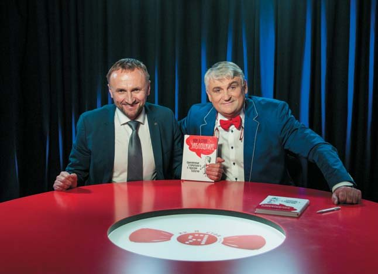
На жаль, за цей час клініка в Одесі закрилася. Талановитий лікар не впорався з бізнесом. І тоді я зрозумів, що крутий лікар та крутий бізнесмен – це рідкісне поєднання, і останнім часом більше відмовляю у франшизі, ніж погоджуюся. Проте на найближчий період ми розглядаємо продаж франшизи наших Dental Care Offices, де партнерами вже можуть бути бізнесмени, а не обов’язково стоматологи.
– Ви ведете активну викладацьку діяльність, передусім у рідному Львівському національному медичному університеті імені Данила Галицького. Що Ви можете сказати про нинішнє покоління студентів-стоматологів?
– Гадаю, що теперішнім студентам в Україні не дуже пощастило. Те навчання, яке було в СРСР, уже відсутнє, а те, яке має бути, європейське, на жаль, ще відсутнє. Тому сьогодні єдиний спосіб оволодіти знаннями, найсучаснішими методиками і підходами – їхати вчитися за кордон. Богу дякувати, є країни, які можуть прийняти наших студентів навіть на безплатне навчання. При цьому варто знати, що, наприклад, у США студенти самі беруть кредити на навчання, а потім, працюючи, повертають їх протягом багатьох років.
Що роблю я особисто? Ми відкрили Академію Заблоцького, гаслом якої є «Те, чого не навчають у підручниках». Стажуємо та навчаємо адміністраторів, медичних сестер, проводимо курси з функціональної діагностики для стоматологів, де викладають мої співробітники, котрі роблять її щоденно. Також ми навчаємо медиків бізнесу. Раз на квартал я веду дводенний курс «Маркетинг від Заблоцького». Нашою справою став консалтинг – проєктуємо стоматологічні клініки. Це моє хобі. Останні мої роботи – це клініка Євгена Захаренка у Києві та клініка Bekzhan Omeshbayev у Казахстані. Сьогодні я виступаю таким собі комунікатором між медициною і бізнесом, регулярно влаштовую форуми для власників та керівників клінік, де виступають бізнесмени, маркетологи-візіонери. Пишу нову книжку про маркетинг і бізнес у медицині.
«Де-факто ми – сімейна компанія»
– У своїй книзі «Як я став Заблоцьким. Пригоди стоматолога в червоному метелику» Ви пишете про стоматологію як галузь, якій личить бути сімейною справою, і розповідаєте про дружину, доньку, сина, які теж пов’язали свою долю з нею. Чи скоро біля вивіски «Клініка Заблоцького» з’явиться доповнення – «Батько&Донька&Син»?
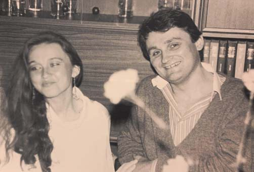
– Гадаю, невдовзі під назвами «Клініка Заблоцького» з’явиться напис «Батьки і діти». Коли я два десятиліття тому відкривав свою першу приватну клініку, я не замислювався над тим, чи продовжать мою справу діти, доньці тоді було 9 років, синові 6. Донька Оленка навчалася по класу фортепіано в музичній школі імені Соломії Крушельницької, де викладала моя дружина. Відкривши клініку, я попросив дружину Зеновію допомогти мені, адже треба матеріали купувати, зарплату і податки нараховувати, а я вмію зуби лікувати. І Зеня допомагає мені вже 21 рік. Ми з нею сперечаємося лише про одне: де у неї основна робота, а де хобі. Я кажу, що основна робота в клініці, а музика – хобі. А вона заперечує: «І не думай, у мене музика – основна робота, а клініка – хобі».
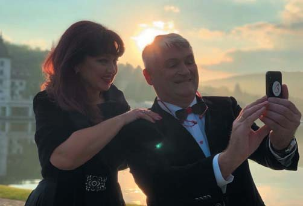
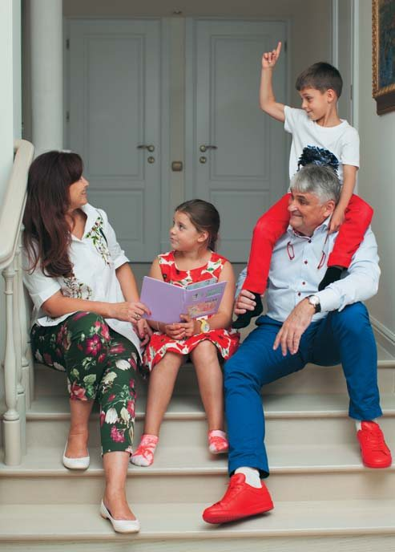
За цей час виросли діти. Оленка вчилася три роки у Львові, два – у Відні, а потім закінчила Ягелонський університет у Кракові за спеціальністю стоматологія. Син Олег теж три роки вчився у Львові, потім у Кракові, закінчив Ягелонський університет, навчаючись на лікувальному факультеті англійською мовою, а недавно одержав диплом стоматологічного факультету в Познані. Ці дві вищі медичні освіти потрібні йому для того, щоб в Англії або Ірландії здобути спеціалізацію щелепно-лицьового хірурга. Тобто йому 29 років, і аж років у 37 він повернеться в Україну, але з компетенціями, які в нашій країні мало у кого є.
Отже, діти обрали мою професію, дружина – директор клініки, відтак де-факто ми – сімейна компанія. Збираємося написати сімейну конституцію, створити раду директорів, тобто чужих запрошених людей, щоб не ми самі ухвалювали рішення. І якщо сімейна конституція це підтримає, то на фасадах наших клінік з’явиться доповнення: «Батьки і діти». Ясна річ, мені хочеться, щоб нашу сімейну справу продовжили і внуки, і правнуки. Щоб створити такі компанії, як BMW, потрібно було понад століття, тож ми лише на початку шляху.
– Які у Вас є захоплення, окрім стоматології?
– Стоматологія!
– Іншого від Ярослава Заблоцького я й не сподівалася почути!.. На завершення – традиційне запитання для дентартівської Вітальні: що б Ви побажали колегам, котрі читатимуть це інтерв’ю?
– Ваш журнал читають люди, які прагнуть чогось досягти у цьому житті. Ті, хто нічого не прагне, взагалі нічого не читають. Я бажаю вашим читачам, особливо молодим фахівцям, віри в себе. Але самої віри мало. Треба вірити і діяти. Нам усім треба вчитися брати на себе відповідальність. Якщо ми її на себе візьмемо, віра у свою справу, свою місію допоможе досягнути успіху. І можливо, ви станете стоматологом у блакитному чи якомусь іншому метелику, і Стратегія Блакитного Океану виведе вас на професійні та бізнесові вершини…
– Дякую за розмову! З нетерпінням чекатимемо на Вашу нову книгу.
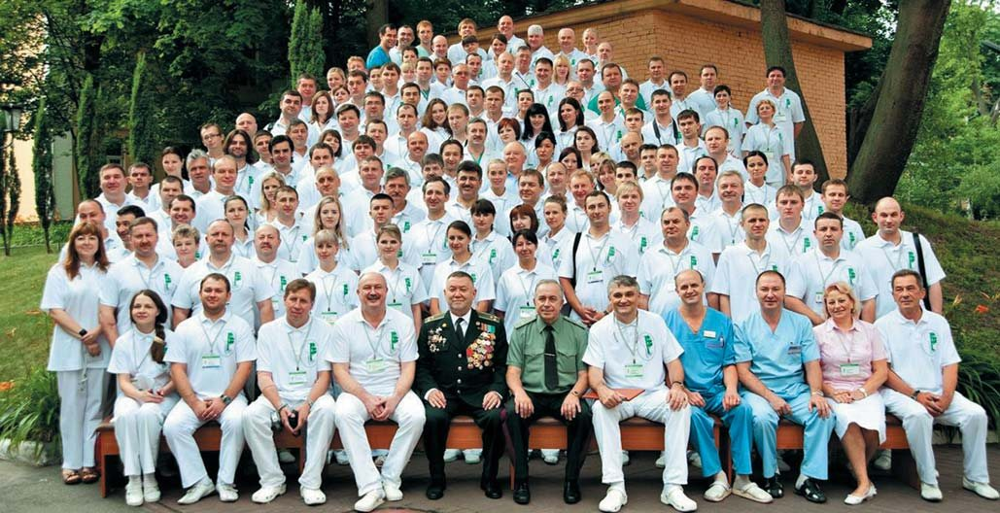
Розмовляла Ганна Антипович, заслужена журналістка України.
Фото з архіву Ярослава Заблоцького.
*«Стратегія Блакитного Океану. Як створити безхмарний ринковий простір і позбутися конкуренції» – книга Кім Ві Чана і Рене Моборна, в якій досліджуються ринкові тенденції протягом 120 років у 30 сферах виробництва. Основною ідеєю є відмова від жорсткої конкуренції і пошук вільних ніш, «блакитних океанів». Традиційний маркетинговий підхід називається «червоним океаном», бо він насичений кров’ю подоланих конкурентів.